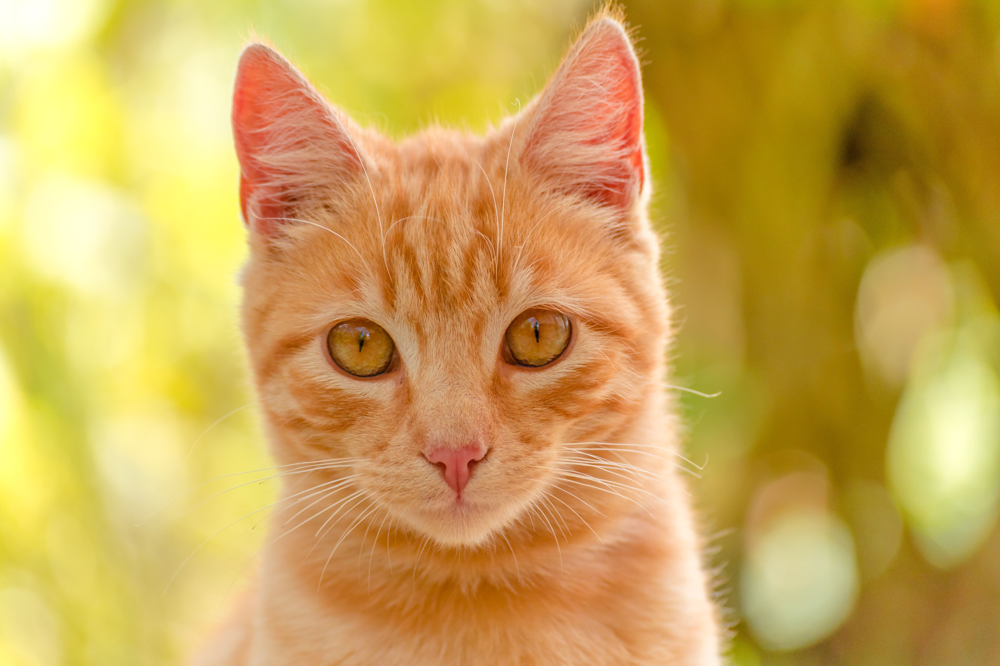
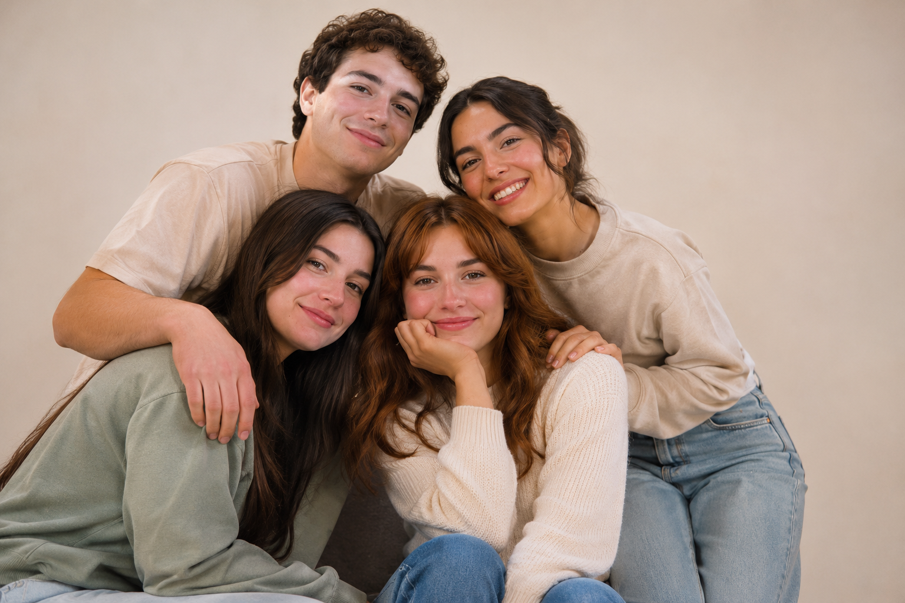
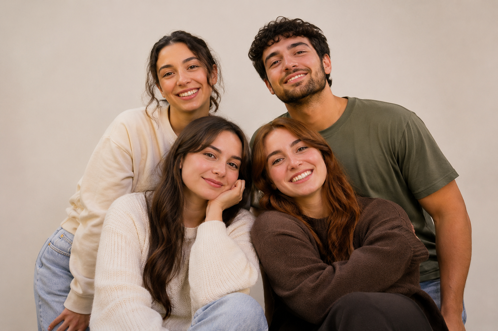

NUESTRA misión.
Promover la adopción responsable de perros y gatos, conectándolos con personas comprometidas con su bienestar. Buscamos ofrecer un proceso seguro, transparente y acompañado para crear relaciones responsables y duraderas.




Patitas surge de una idea sencilla: ayudar a que más perros y gatos encuentren un hogar donde puedan recibir amor, atención y los cuidados que necesitan.
Sabemos que adoptar una mascota es una decisión importante. Por eso, buscamos que este proceso sea seguro, claro y acompañado, tanto para las mascotas como para sus nuevas familias.
Queremos que cada adopción sea el comienzo de una historia llena de amor y responsabilidad.
Promover la adopción responsable de perros y gatos, conectándolos con personas comprometidas con su bienestar. Buscamos ofrecer un proceso seguro, transparente y acompañado para crear relaciones responsables y duraderas.
Ser una plataforma que inspire a más personas a elegir la adopción y reconozcan la importancia del cuidado animal. Queremos contribuir a una comunidad donde cada mascota tenga la oportunidad de encontrar un hogar seguro y lleno de cariño.
✳Reconocemos que todos los animales merecen recibir un trato digno y vivir en buenas condiciones.
Creemos que adoptar significa asumir la responsabilidad de cuidar a una mascota durante toda su vida.
Buscamos comprender las necesidades de cada animal y de las personas que desean adoptar.
Queremos ofrecer información clara y confiable durante todo el proceso de adopción.
Promovemos decisiones conscientes que tengan como prioridad el bienestar de las mascotas.
Desliza para conocer nuestros valores
Detrás de cada historia hay personas que creen en la importancia de dar nuevas oportunidades.

Conexión entre mascotas y familias.
Acompañamiento durante el proceso.

Cuidado y protección animal.
Compartimos historias que dejan huella.